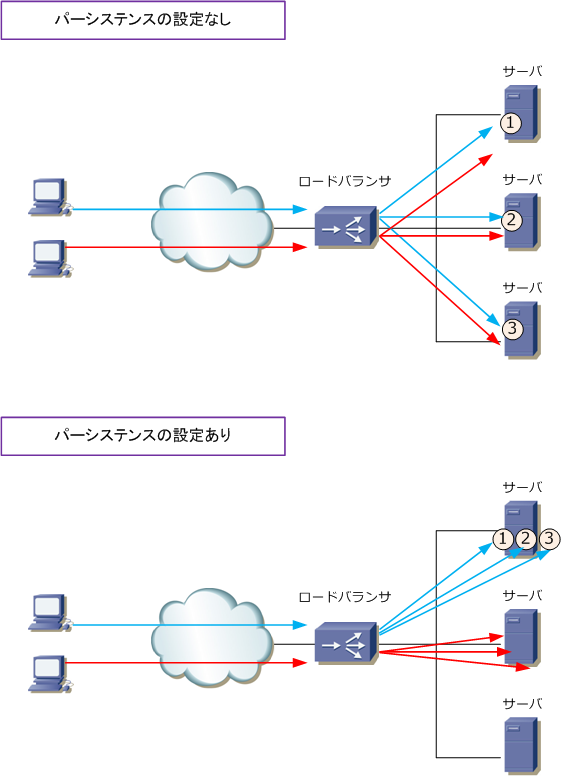
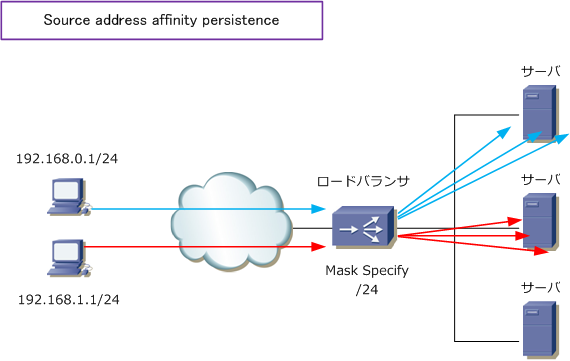
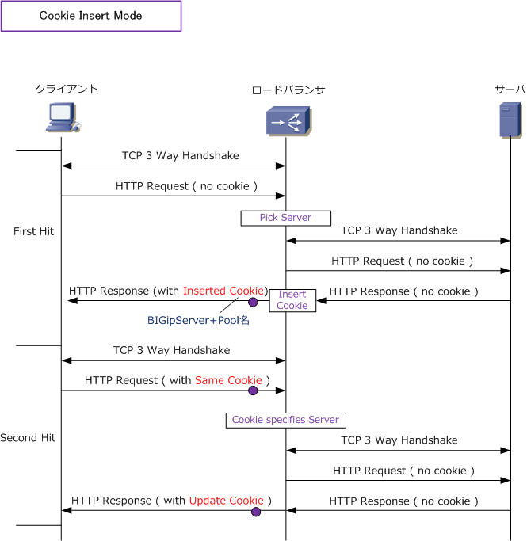
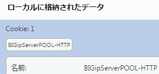
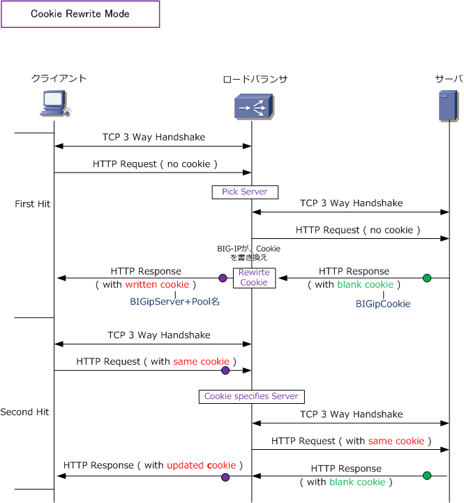

Load Balancer - Persistence
ロードバランサの重要な3つの機能
ロードバランサには色々な機能があります。また、ロードバランサがシングルの場合と冗長化の場合とでは 使用する機能も大きく異なってきます。ここではシングル構成や冗長化構成に関係なく、ロードバランサ導入 に際して必須知識のロードバラシング（負荷分散）、パーシステンス（セッション維持）、モニター（監視） の3つの重要な基本機能を紹介していきます。今回はパーシステンス（セッション維持）を紹介していきます。
ロードバランサ - パーシステンス
パーシステンスは、同一のクライアントからのリクエストを常に同じサーバに転送するセッション維持機能。 ECサイトのオンラインショッピングでは、クライアントからの連続して発生するリクエストを同一のサーバ に転送する必要のあるWebシステムがあり、そのようなシステムではこのパーシステンスは必須の実装機能。
ECサイトに限らず、イントラで使用するサーバの負荷分散においてもパーシステンスを実装させる必要性の あるWebアプリも多いです。要件がない場合でも、送信元IPアドレスによるパーシステンスの設定が望ましい。

例えばロードバランシングでRound Robinを設定していて、パーシステンスを設定しない場合、上図のように サーバへの負荷分散は実現しますが、負荷分散しながら、同一のクライアントからのリクエストを同じサーバ への転送はできません。しかし、負荷分散を設定だけではなくパーシステンスを設定していれば、負荷分散し ながらも、クライアントの送信元IPを見て、同一クライアントからのリクエストを同じサーバへ転送できます。
以下のパーシステンスの種類は、F5社の負荷分散装置（BIG-IP）で実装されている機能紹介となっていますが 他メーカの製品も基本的には同じような機能をサポートしています。色々な種類があるとはいえ、よく使用され ているパーシステンスはクライアントの送信元IPアドレスによりロードバランサが割り振るサーバを固定する Source address affinity persistence、Cookie情報により割り振るサーバを固定するCookie persistenceです。
Source address affinity persistence
Cookie persistence
◇ SSL persistence ◇ Destination address affinity persistence ◇ Hash persistence ◇ SIP persistence ◇ Universal persistence ◇ Microsoft Remote Desktop Protocol persistence
これらのパーシステンス方式はクライアント⇔サーバ間の通信要件により決定しますが、特に要件がない場合 または要件が不明瞭な場合、Source address affinity persistenceをロードバランサに設定しておく事が無難。 以下では、よく使用される Source address affinity persistence と Cookie persistence の2つについて説明。
| パーシステンスの種類 | 説明 | |
|---|---|---|
| Source address affinity persistence | クライアントの送信元IPアドレスを見て、転送するサーバを固定する。 | |
| Cookie persistence | Insert Mode | BIG-IPが特別なCookieをHTTPレスポンスに挿入。※ 最も使用されているモード。 |
| Cookie persistence | Rewrite Mode | WebサーバがCookie(名前：BIGipCookie)を作成し、BIG-IPがCookie情報を更新。 Cookieの値の仕様 ⇒ The cookie must contain a total of 120 zeros |
| Cookie persistence | Passive Mode | WebサーバがCookieを作成し、BIG-IPはその読み取りを行う。 |
| Cookie persistence | Hash Mode | WebサーバがCookieを作成し、BIG-IPはCookie情報を更新する。 BIG-IPは、Webサーバが発行するCookie名を指定する必要がある。 |
※ Cookie persistenceの4つのモードのうちInsert Modeのみサーバ側でCookieを発行する必要がないのでInsert Modeの人気が高い。
Source address affinity persistenceでは、クライアントの送信元IPアドレスを見て転送するサーバを固定。 下図ではロードバランサでネットマスクを「/24」とソースアドレスを指定しているので、以下の分散になる。 ロードバランサで「/32」と指定すれば、セグメントに関係なくホストごとに転送するサーバが固定されます。

Cookie persistenceでは、どのようにどのタイミングでCookieが組み込まれるのかに焦点を当て見ていきます。
下図では、Cookie Insert Modeの通信フローを解説しています。クライアントからの最初のコネクションでは Cookieを保持していないので、ロードバランサはロードバランシングの設定に従いクライアントの通信先となる サーバを選択（Pick Server)して転送します。次にサーバからのHTTP Responseを受信したロードバランサは、 Cookieを挿入してクライアントへHTTP Responseを転送。次に、クライアントからの次のHTTP Requestには 先ほどのCookieが挿入されているので、サーバはその Cookie を見て常に同じサーバに転送できるようになる。

実際にCookie InsertによりBIG-IPから セットされたCookie情報は以下の通り。

Google ChromeブラウザのCookie情報 から確認できました。このBIG-IPに設定 されているプール名は「 POOL-HTTP 」 であることも分かります。
下図はCookie Rewrite Modeの通信フローを詳細に解説します。クライアントからの最初のコネクションでは Cookieを保持していないので、ロードバランサはロードバランシングの設定に従い、クライアントの通信先と なるサーバを選択（Pick Server）して転送。次に、サーバ側で発行したCookieを挿入します。そのCookieが 挿入されたパケットを受信したロードバランサは、そのCookieをRewriteしクライアントへ転送します。次に クライアントからの次のHTTP Requestには先のCookieが挿入されているので、その Cookie を見て常に同じ サーバに転送します。

※ Cookie Rewriteでは「BIGipCookie」という名のCookieをインターセプトして「BIGipServer+Pool名」に書き換え。